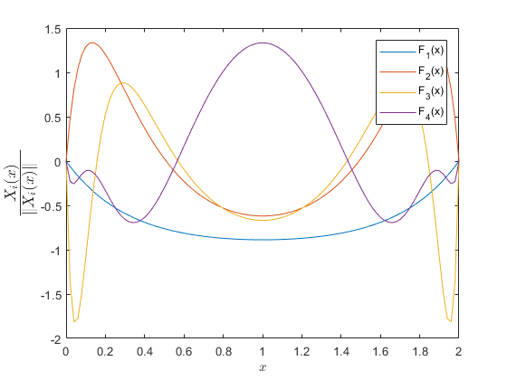

Contents
PGD CODE FOR POISSON EQUATION
Reproduction of the cases of the book: "The Proper Generalizeed Decomposition for Advanced Numerical Solutions, a primer" (Authors: Chinesta, Keunings and Leygue).
Oriol CHANDRE VILA ISAE-SUPAERO, June 2018
clear all; close all; clc; warning('off');
Initialization of the problem
% VARIABLES global coords ndim dy dx nen TOL TOL_TILDE; ndim = 2; TOL = 1.0E-08; % Tolerance. TOL_TILDE = 1.0E-05; % PGD enrichment tolerance. num_max_iter = 4; % Max. # of functional pairs for the approximation. % GEOMETRY X0 = 0; Xf = 2; Y0 = 0; Yf = 1; % The domain: [0,2]x[0,1] nen = 101; % # elements for each direction X = linspace(X0,Xf,nen); Y = linspace(Y0,Yf,nen); coords = [X' Y']; dx = coords(2,1) - coords(1,1); dy = coords(2,2) - coords(1,2); % ALLOCATION OF MATRICES AND VECTORS F = zeros(numel(coords(:,1)),1); % Nodal values of spatial-X function F G = zeros(numel(coords(:,2)),1); % Nodal values of spatial-Y function G % These vectors are defined by: [#elem, #enrichment(n)] % SOURCE TERM IN SEPARATED FORM: f(x,y) = Fx(x)*Fy(y) f = -1; f_source(:,1) = f*ones(nen,1); % Fx(x) f_source(:,2) = ones(nen,1); % Fy(y)
Offline step (PGD Solution)
% SOLVING THE PROBLEM [F,G] = PGD_Poisson_2D(num_max_iter); fprintf(1,'PGD offline Process exited normally\n'); save('WorkSpacePGD_ParametricedPoisson.mat');
PGD offline Process exited normally
Post-process
figInt = 0; % NORMALIZATION OF THE COMPUTED FUNCTIONS plotF = bsxfun(@rdivide,F,sqrt(trapz(coords(:,1),F.^2))); plotG = bsxfun(@rdivide,G,sqrt(trapz(coords(:,2),G.^2))); % F-i PLOT figInt = figInt + 1; figure(figInt); set(gca,'fontsize',14); handles = plot(coords(:,1),plotF); legend(handles,cellfun(@(in) ['F_' num2str(in) '(x)'],... num2cell(1:num_max_iter),'uniformoutput',false)); xlabel('$x$','interpreter','latex'); ylabel('$\frac{X_i(x)}{\|X_i(x)\| \,\,\, \,\,}$','interpreter','latex',... 'fontsize',18); % G-i PLOT figInt = figInt + 1; figure(figInt); set(gca,'fontsize',14); handles = plot(coords(:,2),plotG); legend(handles,cellfun(@(in) ['G_' num2str(in) '(y)'],... num2cell(1:num_max_iter),'uniformoutput',false)); xlabel('$y$','interpreter','latex'); ylabel('$\frac{G_i(y)}{\|G_i(y)\| \,\,\, \,\,}$','interpreter','latex',... 'fontsize',18); % SURFACE PLOT figInt = figInt + 1; figure(figInt); set(gca,'fontsize',14); grid on hold on plot3(coords(:,1),zeros(size(coords(:,1))),plotF/50,'linewidth',1); plot3(zeros(size(coords(:,2))),coords(:,2),plotG/50,'linewidth',1); surf(coords(:,1),coords(:,2),G*F'); colormap('default'); xlabel('x'); ylabel('y'); zlabel('2D reconstructed PGD Solution: U_4(x,y)','fontsize',10); view(3);